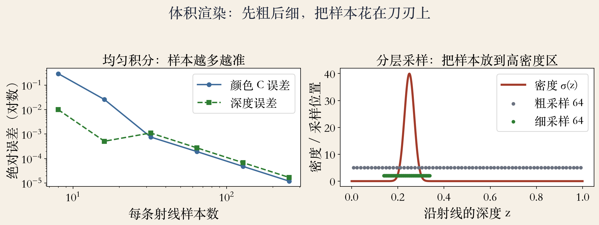
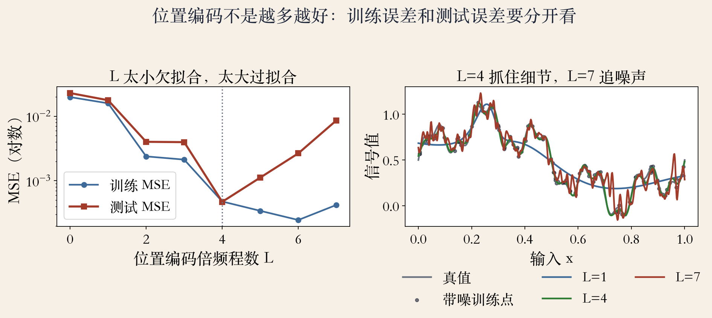
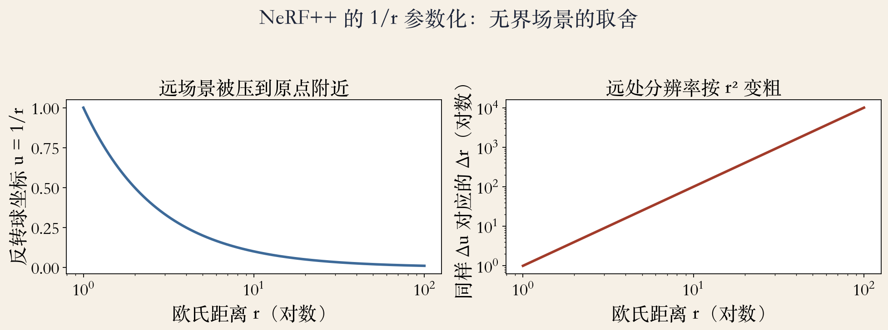

第 14 章 · 工程开场
NeRF 好用，为什么难用
训练要大量已定位图像。
渲染一像素要多次查 MLP。
原始假设静止、光照受控。
场景一大，远处采样稀。
依据：原书第 906–908 页
四笔账
训练：图像要多
渲染：查询要少
鲁棒：光照要稳
范围：远近都要密
正课第一百一十六集
01 / 12
体积渲染
沿射线把颜色积起来
每段透明度 α = 1 − exp(−σδ)。
像素颜色 C = Σ T α c。
深度是权重加权的期望。
近处先占权重，远处被衰减。
依据：原始 NeRF 标准写法；原书第 906–908 页为背景
C = Σ Tᵢ αᵢ cᵢ
T：累计透过率；α：分段透明度；c：颜色；σ：密度
正课第一百一十六集
02 / 12
采样预算
先粗后细，把点放对地方
64 个粗样本估权重。
64 个细样本放高密度窗。
总预算还是 128 个。
窗口太窄漏峰，太宽退回均匀。
依据：本集实验；原始 NeRF 标准流程
分层采样
粗：找哪里有东西
细：把那里看清
计算量 = 像素 × 射线 × 样本
正课第一百一十六集
03 / 12
书上第 906 页 · 训练加速
元学习与锥形追踪
元学习预训练，加速新图像优化。
锥形追踪加积分位置编码。
减少混叠，处理多分辨率。
像素是有面积的锥，不是细线。
依据：原书第 906 页
两条做法
预训练：类别更广
锥形追踪：半径随距离变大
积分编码：先低通再采样
正课第一百一十六集
04 / 12
书上第 906 页 · 无界场景
NeRF++ 与 NSVF 各改一处
NeRF++：1/r 反转球处理无界。
NSVF：非空八叉树单元放网络。
1/r 让近处密、远处疏。
建树也有成本，不是白拿的加速。
依据：原书第 906 页
两种思路
改坐标：u = 1/r
改结构：跳过空单元
目标：算力花在有内容处
正课第一百一十六集
05 / 12
书上第 907 页 · 数据条件
照片不干净，照片也不够
原始 NeRF 要静态、受控光照。
NeRF-W 建模天气时间，去游客。
pixelNeRF 用单图或少图条件化。
一个分外观，一个补先验。
依据：原书第 907 页
两类问题
脏：外观与瞬时物分开
少：类别先验补视角
否则游客会被烤进场景
正课第一百一十六集
06 / 12
书上第 907 页 · 动态与重光照
从看颜色到看材质、光照、运动
动态工作吃手持视频，建非刚性形变。
NeRV 返回法向、BRDF、可见性。
NeRD 与 PhySG 用球面高斯建模光照。
BRDF 让高光和粗糙度可解释。
依据：原书第 907 页
补哪一笔账
运动：形变场或时间输入
材质：BRDF 参数化
光照：球面高斯近似
正课第一百一十六集
07 / 12
实验一 · 积分与分层采样
同样预算，放对地方更准
8 样本误差 0.30。
256 样本误差 1.19e-05。
64 粗加 64 细：8.82e-06。
128 个均匀样本：4.78e-05。
依据：本集实验

均匀积分 / 分层采样：误差收敛与采样位置｜程序生成，未用教材或论文原图
正课第一百一十六集
08 / 12
实验二 · 频率取舍
位置编码不是越多越好
L = 0：测试误差 2.28e-02。
L = 4：测试误差 4.72e-04。
L = 7：训练更低，测试反弹 8.60e-03。
编码维度 2L，不含原始坐标。
依据：本集实验

训练 / 测试 MSE：位置编码 L 的取舍｜程序生成，未用教材或论文原图
正课第一百一十六集
09 / 12
实验三 · 无界场景
1/r：近处细，远处粗
10 倍距离对应 100 倍分辨率差。
100 倍距离对应 10000 倍。
64 个均匀 u 样本，间隔比 3828 倍。
前景普通 NeRF，背景反转球。
依据：本集实验；原书第 906 页

1/r / r²：无界场景的距离压缩与分辨率｜程序生成，未用教材或论文原图
正课第一百一十六集
10 / 12
书上第 908 页 · 实时化
从论文走向产品
体积采样加 MLP 查询很慢。
八叉树、稀疏网格、MPI 存不透明度和基色。
分解近似建模视角相关。
烘焙或蒸馏，常快 1000 倍。
依据：原书第 908 页
速度的代价
1000 倍只引原书，本 lab 不复现
表示更固定
编辑和重训练更麻烦
正课第一百一十六集
11 / 12
第 14 章 · 移交下一集
公式、编码、工程
公式管怎么积。
编码管看多细。
工程管跑得动。
下一集：3D 高斯泼溅。
依据：原书第 906–908 页
两种表示
NeRF：把场景写进网络
3DGS：把场景撒成高斯
目标一样，开销不同
正课第一百一十六集
12 / 12